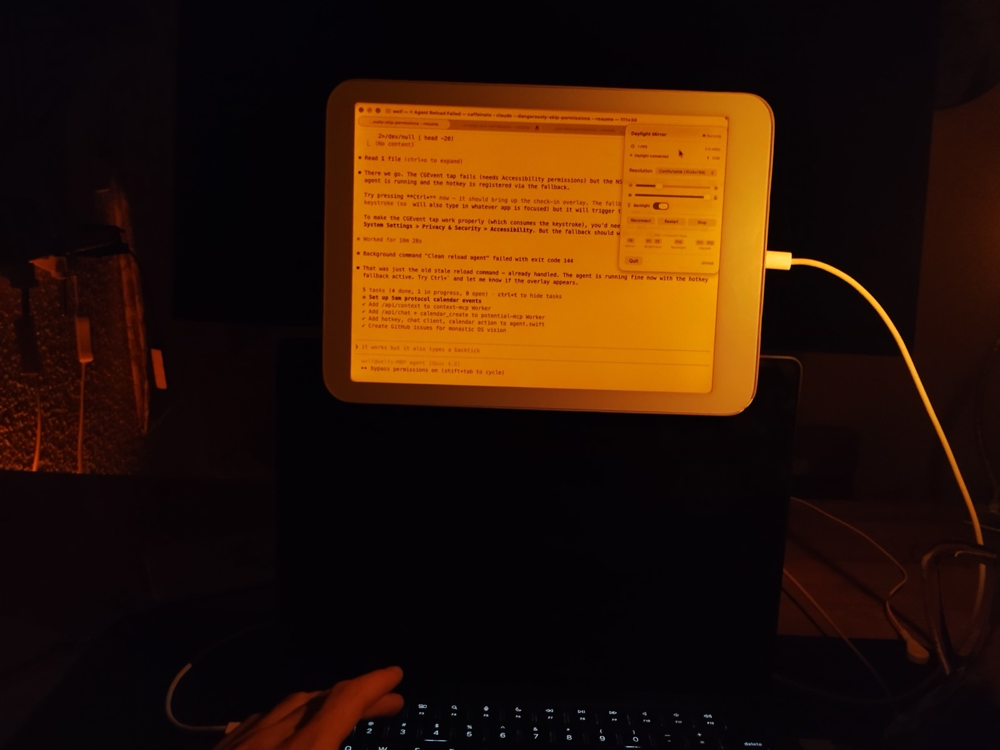
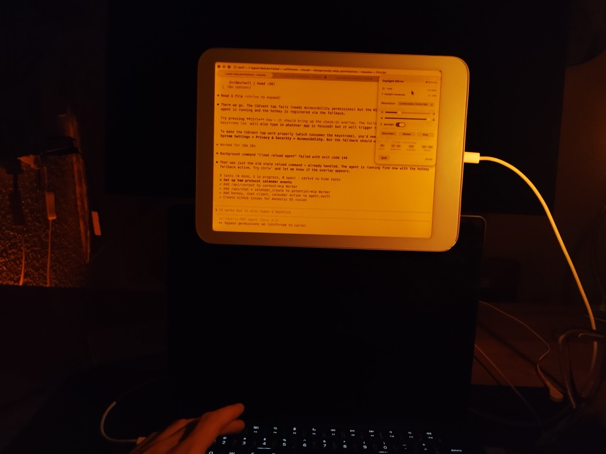

Daylight Mirror
Turn your Daylight DC-1 into a real-time external display for your Mac.
Download on Gumroad Turn your Daylight DC-1 into a real-time external display for your Mac.
Download on Gumroad Your Mac creates a virtual 4:3 display, captures it with ScreenCaptureKit, converts to greyscale on CPU (vImage SIMD), delta-compresses with LZ4, and streams over USB to a native Android renderer. Every pixel is identical on both screens.
| Version | Pipeline | FPS | Bandwidth |
|---|---|---|---|
| Part 1 | VNC → adb → AVNC | ~2 | Unusable |
| Part 1 | screencapture → JPEG → HTTP → Chrome | 4–8 | ~3 MB/s |
| Part 1 | SCStream → GPU greyscale → JPEG → WebSocket | 30 | ~6 MB/s |
| Part 2 | SCStream → vImage → LZ4 → WebSocket → Chrome | 30 | ~0.5 MB/s |
| Part 3 | SCStream → vImage → LZ4 delta → TCP → native NDK | 30 | ~4 KB/frame |
Four 4:3 presets from Cozy (800×600 HiDPI) to Sharp (1600×1200). Switch on the fly — no restart needed.
Ctrl+F8 to toggle mirroring. Ctrl+F1/F2 for brightness. Ctrl+F11/F12 for warmth. All global.
Every feature available from the terminal. daylight-mirror start, status, brightness 200, warmth 128. Scriptable.
Control the DC-1's backlight and amber warmth directly from your Mac. Sliders in the menu bar, or via CLI and keyboard.
Creates a 4:3 display automatically using macOS private APIs. No BetterDisplay license needed. Your Mac thinks it's a real monitor.
Just adb and a USB cable. No GPU, no external apps, no background services. One 4MB binary.


Every character pixel-identical to the Mac. No JPEG artifacts, no dithering.

The DC-1's reflective display in ambient light — designed for this.
The entire project was vibecoded in a single session with Claude. Three blog posts tell the story from VNC to native rendering.
"What started as 'just pipe VNC over adb' became a deep dive into display pipelines, pixel formats, and compression tradeoffs."Part 2
"The GPU was spinning. I'm HSP — highly sensitive to sensory input. The goal shifted: zero GPU usage. Not 'low GPU.' Zero."Part 3
"The pipeline was fast. The experience was not. Five terminal commands became one click."
macOS 14+. Pay what you want on Gumroad, or install via Homebrew.